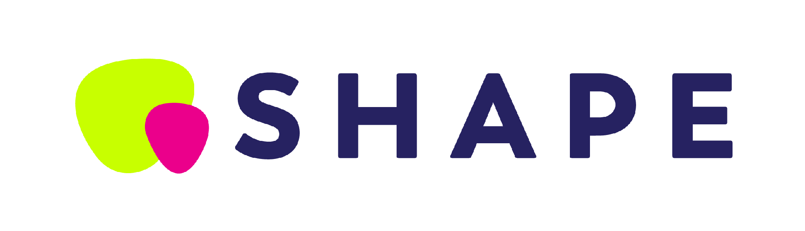

Dr Martin
Médecin gériatre
Partie 2 · La fragilité
Trajectoires fonctionnelles
Robustesse
Pré-fragilité
Fragilité installée
Seuil d'incapacité
stress
PHASE LA PLUS RÉVERSIBLE
Robustesse
Réserves élevées, récupération complète
Pré-fragilité
Déclin léger, récupération incomplète
Fragilité installée
Déclin accéléré, seuil franchi
Leviers
Activité physique adaptée
Nutrition
Lien social
Déterminants
Biologiques
Psychosociaux
Environnementaux
La fragilité n'est pas une fatalité.
C'est une trajectoire que l'on peut infléchir.
Woolford et al., 2020